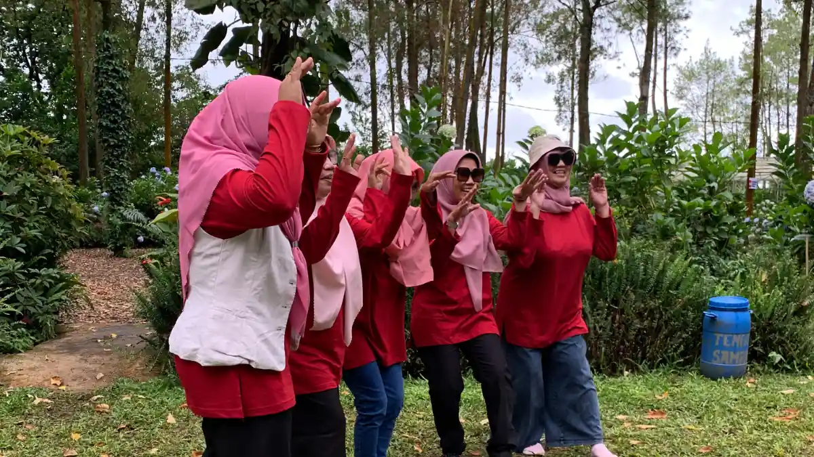

Outbound 10 orang hingga 20 orang adalah skala kegiatan team building yang umum dilakukan di level departemen atau tim proyek khusus, dan tidak memerlukan EO besar maupun perlengkapan sound system yang rumit. Kelompok kecil seperti ini cukup mengandalkan kertas, spidol, dan alat bantu ponsel untuk menjalankan sesi yang tetap efektif.
Ringkasan Inti
- Tim kecil tidak membutuhkan skala persiapan sebesar gathering perusahaan.
- Konsep kegiatan sebaiknya disesuaikan dengan masalah internal tim, bukan sekadar ikut tren.
- Aktivitas harus tetap introvert-friendly tanpa hukuman yang memalukan.
- Beberapa permainan sederhana seperti Tukar Cepat dan Floating Stick cocok untuk grup kecil.
- Satu orang PIC dari HRD biasanya sudah cukup untuk memfasilitasi acara skala ini.
1. Bagaimana Cara Menentukan Konsep Kegiatan untuk Grup Kecil?
Cara menentukan konsep kegiatan untuk grup kecil adalah dengan menyesuaikannya pada masalah internal tim yang ingin diselesaikan, misalnya mempercepat adaptasi karyawan baru atau mencairkan kebekuan setelah periode kerja yang padat.
Konsep yang dipilih berdasarkan kebutuhan nyata tim akan jauh lebih berdampak dibandingkan sekadar mengikuti format outbound yang sedang tren.
2. Apa yang Harus Dihindari Saat Merancang Aktivitas Tim Kecil?
Yang harus dihindari saat merancang aktivitas tim kecil adalah hukuman yang memalukan atau memaksa peserta tampil di depan umum, karena format seperti ini justru berisiko membuat peserta introvert merasa tidak nyaman.
Idealnya, setiap aktivitas dirancang agar peserta bisa berpartisipasi sesuai kenyamanan masing-masing tanpa tekanan untuk selalu tampil menonjol.


3. Apa Saja Ide Permainan Outbound Seru untuk 10-20 Orang?
Ide permainan outbound seru untuk 10-20 orang meliputi tiga aktivitas berikut yang mudah dijalankan tanpa perlengkapan rumit.
Tukar Cepat
Tim dibagi dua kelompok saling berhadapan. Satu tim berbalik badan, sementara tim lawan mengubah penampilan seperti menukar sepatu atau jam tangan antaranggota. Tim pertama kemudian harus menebak perubahan yang terjadi. Permainan ini ideal untuk 10-20 orang dengan durasi sekitar 10-15 menit.
Two Truths, One Lie
Setiap anggota menceritakan dua fakta dan satu kebohongan tentang dirinya, sementara anggota lain menebak mana yang bohong. Format ini cocok untuk membangun koneksi yang lebih mendalam dalam grup kecil.
Floating Stick (Tongkat Terapung)
Tim beranggotakan lima orang atau lebih harus menurunkan sebuah tongkat ringan ke tanah menggunakan satu jari per orang tanpa ada yang melepaskan sentuhan. Permainan ini menguji kesabaran sekaligus sinergi kelompok secara langsung.

4. Kenapa Two Truths, One Lie Efektif untuk Tim yang Baru Terbentuk?
Two Truths, One Lie efektif untuk tim yang baru terbentuk karena format ceritanya memaksa setiap anggota membuka sedikit informasi personal, yang secara alami memicu percakapan lanjutan dan rasa penasaran antaranggota.
Permainan ini juga rendah risiko karena tidak menuntut aktivitas fisik maupun keterampilan khusus.
5. Apakah Grup Kecil Tetap Membutuhkan EO?
Grup kecil umumnya tidak membutuhkan EO karena satu orang PIC dari HRD yang merangkap fasilitator, bermodal slide sederhana dan timer, biasanya sudah cukup untuk menjalankan acara berjumlah sekitar 20 orang.
Menggunakan format acara berskala 100 orang untuk grup kecil justru berisiko membuat suasana terasa dipaksakan dan kurang personal.
6. Apa Peran PIC HRD dalam Mengelola Outbound Skala Kecil?
Peran PIC HRD dalam mengelola outbound skala kecil adalah memastikan alur permainan berjalan sesuai rencana, menjaga waktu agar tidak molor, dan memandu sesi refleksi singkat di akhir kegiatan.
Karena skalanya kecil, PIC juga bisa lebih leluasa mengamati dinamika tiap anggota tim secara langsung dibandingkan pada acara berskala besar. Outbound skala kecil lebih menitikberatkan pada perbincangan mendalam, saling mengenal preferensi kerja, dan komunikasi personal antaranggota tim. Untuk memahami konsep outbound secara menyeluruh, termasuk cara menilai keberhasilan sesi komunikasi tim, baca panduan lengkapnya pada pembahasan outbound karyawan.